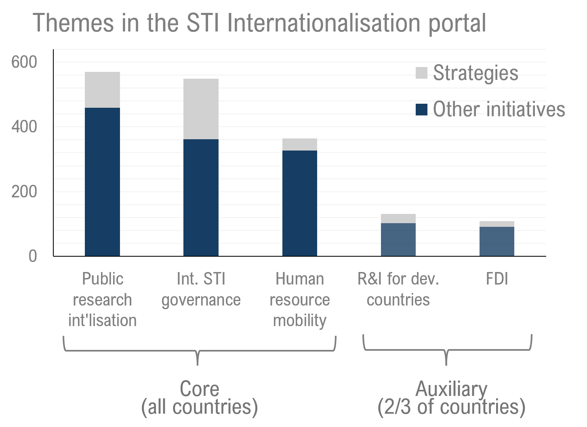
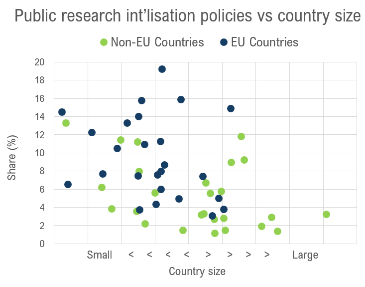

Scientific advancement and innovation capabilities are enhanced when knowledge and resources are shared between countries and talent can circulate internationally. Research and innovation have become increasingly internationalised in recent decades to reap these benefits. Public policies for STI internationalisation shape the institutional context in which individuals and firms and research organisations engage in cross-border STI activities.
STI internationalisation policies promote and modulate the linkages connecting countries in the production, application and governance of knowledge, data and technology. These linkages are currently being reconfigured as rising geopolitical tensions and strategic competition on critical technologies contribute to a growing "securitisation" of STI. As described in the 2025 OECD STI Outlook, governments are reorienting R&D funding towards national and economic security, strengthening research security measures, and using science diplomacy more strategically to further national interests alongside multilateral goals. These developments do not diminish the importance of STI internationalisation policies, but they do change their context and nature, making it all the more important to understand how countries currently structure them.
The STIP Compass portal on STI internationalisation helps to explore this landscape across more than 60 countries. STI internationalisation policies represent a significant share of national STI policy mixes: on average, 16% of policy initiatives in a country address internationalization. Countries focus primarily on international STI governance, such as joint strategies and agreements, horizontal coordination or regulatory oversight bodies, and public research internationalisation, including funding and incentive schemes to internationalise universities and public research institutions. Country size and EU membership shape how much emphasis is placed on these activities.
What are the building blocks of STI Internationalisation policy?
STI internationalisation policies span five themes in STIP Compass, each corresponding to a different channel through which STI crosses borders: knowledge, through Internationalisation in public research; capital, through Foreign direct investment; people, through International mobility of human resources; development partnerships, through Research and innovation for developing countries; and the coordination layer above them, through International STI governance policy.
International STI governance such as partnerships and cooperation strategies provide the foundations from which sustainable collaboration emerges. Initiatives such as the Guidelines and Tools for Responsible International Knowledge Cooperation from Norway provide guidance on international research by clarifying the responsibilities of knowledge groups or introducing methods for conducting assessments prior to engaging in partnerships under research security concerns. New Zealand's Australia and New Zealand Science, Research and Innovation Cooperation Agreement provides a comprehensive foundation for a shared innovation ecosystem.
Research and innovation for developing countries policies include mechanisms that support developing countries in building innovation capacity. For instance, Italy's Research Capacity Building with Africa initiative focuses on strengthening innovation ecosystems and transnational education networks. Korea's Appropriate Technology Supporting Centers apply research and technology to local development challenges through centres in countries including Cambodia, Laos, Nepal, Tanzania and Ethiopia.
Internationalisation in public research concerns how government-funded or trans-national public projects create platforms for the exchange of expertise and resources. While research subjects vary, topics that require large-scale coordination or advance the common good particularly benefit from international collaboration. This includes topics on maritime technologies that require large-scale coordination, e.g., Malta's Changing Marine Lightscapes JPI Oceans Joint Action, or topics on enhancing healthcare, e.g., Australia's National Health and Medical Research Council International Engagement Strategy; or topics requiring large-scale computing infrastructure, e.g., Greece's participation in the European High Performance Computing Joint Undertaking (EuroHPC).
Foreign direct investment policies may have specific target goals such as attracting research, providing domestic innovation access to global value chains, or facilitating knowledge and skill transfer of cutting-edge technologies. Countries also aim to support commercialisation of innovations through foreign investment as exemplified in the Startups Connecting Links initiative in Portugal. Spain's INNOVA INVEST channels foreign investment specifically into domestic R&D through targeted grants.
Human resource mobility drives STI internationalisation by transferring knowledge, establishing cross-border networks, and embedding foreign expertise within domestic institutions. Efforts are being made globally to attract talent, such as the High Potential Individual Visa from the United Kingdom, specifically targeting researchers, professors, and post-doctoral or higher education students. Canada's Global Skills Strategy similarly speeds firms' access to global talent. These policies recognise that research capacity and industrial innovation both depend on accessing global talent pools.
How are policy mixes for STI internationalisation composed?

STI internationalisation policies focus primarily on three areas, covered by all countries: promoting public research internationalisation, developing international STI governance through strategic frameworks that set goals and priorities for cross-border cooperation, and human resource mobility. These core themes reflect the gradual institutionalisation of international collaboration in research and strategic responses to intensifying global talent competition.
By contrast, research and innovation for developing countries and FDI receive less attention, appearing in only two-thirds of participating countries. For the former, this likely reflects its donor-driven nature. For FDI, STIP Compass captures policy attention rather than investment flows: many large economies already attract substantial FDI, which could limit needs for dedicated policy, whereas smaller economies more often need active measures to draw it in.
Which countries care most about internationalisation policies?
Country size appears to influence how much emphasis a country places on STI internationalisation. Smaller countries tend to allocate more STI policies to internationalisation activities, with some having a share of up to 19% on internationalisation. Larger countries, by contrast, devote less than 5% of their STI policies to internationalisation. Smaller countries face inherent challenges: fewer researchers and engineers, limited infrastructure, and smaller funding pools. STI internationalisation helps them reach the critical mass needed for innovation and discovery. Through international networks, they can access global resources, markets, and specialised knowledge needed for cutting-edge technologies.
EU member states generally show somewhat higher internationalisation shares than non-EU countries of comparable size, which likely stems from their cooperation in the European Research Area and participation in research framework programmes like Horizon Europe. More detailed analyses show that on average, EU countries dedicate approximately 10% of their internationalisation policies specifically toward EU-related initiatives, and that also when disregarding these, the observation that small countries have stronger foci on internationalisation policies stays true.

With its dedicated portal, The STIP Compass makes STI internationalisation policies explorable. Users can browse and compare how individual countries structure their internationalisation policies, filter by theme, and trace specific initiatives across more than 60 countries. The same underlying data support the kind of cross-country analysis shown here, and can be turned to other questions: how policy attention shifts over time, how national approaches differ by theme, or where countries converge and diverge as the geopolitical context changes.